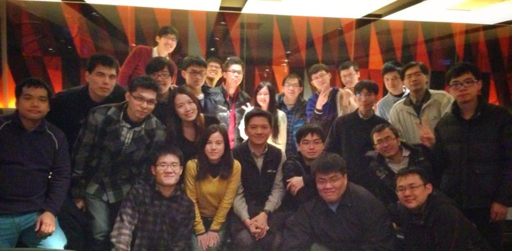

<link rel="import" href="../../bower_components/polymer/polymer.html">

<dom-module id="about-page">
    <template>
        <style>
            :host {
                text-align: center;
                font-family: 'Noto Sans', sans-serif;
            }

            img {
                height: 70%;
                width: 70%;
            }

            paper-card {
                margin: 15px 0 15px 0;
                width: 90%;
            }

            .sub-title {
                border-bottom: 1px #333333 solid;
                margin-top: 30px;
                margin-bottom: 20px;
                color: #333333;
                font-size: 1.8em;
                font-weight: bold;
            }

            .research-content {
                text-align: left;
                padding: 0 20px 20px 20px;
            }

            @media (max-width: 800px) {
                img {
                    width: 100%;
                    height: 100%;
                }
            }
        </style>

        <div>
            <h1 class="sub-title">We are the NTUST MIT Laboratory</h1>
            

            <div class="zh-TW-content">
                <p>本實驗室位於台灣科技大學電資大樓EE705-6，現有專題生4名，碩士生11位，博士班2位。
                實驗室會定期聚餐、舉辦活動，學習風氣良好，相處氣氛融洽，實驗室環境佳，並積極發表研究論文，與參加國內外研討會。
                歡迎對行動通訊系統、居家感測照護系統、雲端整合系統等相關領域有興趣的有志青年加入。</p>

                <h1 class="sub-title">What we study?</h1>
                <paper-card elevation="2">
                    <paper-icon-item class="menu-item">
                        <div class="research-title">行動通訊服務系統</div>
                        <iron-icon icon="grade" item-icon></iron-icon>
                    </paper-icon-item>
                    <p class="research-content">由於無線通訊技術的進展，在後語音服務時代，繼之而起的行動服務逐漸受到注意。典型的無線行動服務主要包含三部分：服務、使用者端設備及網路。於異質網路上建置行動寬頻服務，過去相關研究大多著重於單一服務設計問題，而我們著力於研究面對服務整合及可擴充性的問題，於是我們著力於研究探討實務架構中每一元件之互動時，例如： TRASS、SPONGE等系統，並實際提出可實現之行動通訊服務系統，例如行動監控系統，此外亦關注智慧型手機用戶端的能耗問題。</p>
                </paper-card>

                <paper-card elevation="2">
                    <paper-icon-item class="menu-item">
                        <div class="research-title">異質網路整合議題</div>
                        <iron-icon icon="grade" item-icon></iron-icon>
                    </paper-icon-item>
                    <p class="research-content">為提供更有效率的無線數據接取服務,不同的無線網路彼此間互補以提供更高的無線接取率，多個異質網路整合於同一個網路服務群組將使其間彼此互動的關係更加複雜，過去相關研究大多著重於前端使用者之使用效能，而我們著力於研究當一個業者提供多種接取技術後，所面臨到要如何在一條且有限頻寬資源的骨幹網路中有效且公平的管理這些龐大的網路流量希望達成有效分配使用者的服務請求、縮短使用者的服務請求的完成時間，並同時提升骨幹網路的使用率，延展志當今的物聯網系統，我們亦關注於異質訊息於物聯網上傳遞之穩定性問題。</p>
                </paper-card>

                <paper-card elevation="2">
                    <paper-icon-item class="menu-item">
                        <div class="research-title">分散資源與分享策略</div>
                        <iron-icon icon="grade" item-icon></iron-icon>
                    </paper-icon-item>
                    <p class="research-content">點對點網路與雲端系統在最近幾年已被廣泛地應用在分散式資源共享。資源或資訊搜尋是首要的挑戰，包括冗長的搜尋時間、大量的重複訊息與較低的成功率。另一方面、點對點網路下最受歡迎的應用即是做檔案分享。過去相關研究大多著重於熱門資源的搜尋且不考慮點對點網路下的節點的分享速度。現今由於異質網路的快速發展使得節點間的傳輸情況多變，於是我們著力於研究探討異質點對點網路節點間的資源找尋與檔案分享效能。</p>
                </paper-card>

                <paper-card elevation="2">
                    <paper-icon-item class="menu-item">
                        <div class="research-title">感測網路相關議題</div>
                        <iron-icon icon="grade" item-icon></iron-icon>
                    </paper-icon-item>
                    <p class="research-content">感測網路已廣泛應至生活，近年來更跨不同領域而整合應用，這方面之研究除了協定上在不同領域應有所調整之探究外，更深入走向立體實務情境下感測網路之研究，及移動式結點的感測網路效能之研究。</p>
                </paper-card>
            </div>

            <div class="en-US-content">
                <p>The MITLAB is located at NTUST EE705-6, 4 college students, 11 graduated students and 2 doctor students.
                    We expect anyone who is interested in mobile, home caring system and cloud computing to join us.</p>

                <h1 class="sub-title">What we study?</h1>
                <paper-card elevation="2">
                    <paper-icon-item class="menu-item">
                        <div class="research-title">Mobile Application/System Design</div>
                        <iron-icon icon="grade" item-icon></iron-icon>
                    </paper-icon-item>
                    <p class="research-content">Thanks to the advancement of wireless technology, mobile services increasingly catch more attention in the post era of the booming voice service. A typical mobile wireless service comprises three parts: services, user devices and networks. Creating mobile broadband services over heterogeneous bearers (2.5G, 3G, WLAN or WiMAX) may face the problem about a great diversity of combinations in service flows. We focus on the challenges about designing mobile services and architectures.</p>
                </paper-card>

                <paper-card elevation="2">
                    <paper-icon-item class="menu-item">
                        <div class="research-title">Heterogeneous Network Related Topics</div>
                        <iron-icon icon="grade" item-icon></iron-icon>
                    </paper-icon-item>
                    <p class="research-content">To offer a more efficient wireless data access service, disparate wireless networks complement each other to provide a higher wireless accessibility. For example, the WLAN network inter-works with the cellular network. Incorporating heterogeneous networks into the network service group could make interactions in-between more complicated. We focus on the challenges while integrating heterogeneous networks.</p>
                </paper-card>

                <paper-card elevation="2">
                    <paper-icon-item class="menu-item">
                        <div class="research-title">P2P network</div>
                        <iron-icon icon="grade" item-icon></iron-icon>
                    </paper-icon-item>
                    <p class="research-content">P2P networks and cloud computing system has been applying in distributed resources sharing system in recent years. The primary challenge is to efficiently searching the resources and information, including verbose searching time, duplicate information and low success rate. On the other hand, the most well-known use of P2P networks is file sharing. Past research usually put emphasis on hot resources searching without considering the speed of peers. The thriving of the heterogeneous network causes diversity of transmitting situations, therefore we are devoted to studying the efficiency of file sharing and searching resources in heterogeneous P2P network.</p>
                </paper-card>

                <paper-card elevation="2">
                    <paper-icon-item class="menu-item">
                        <div class="research-title">Sensor network</div>
                        <iron-icon icon="grade" item-icon></iron-icon>
                    </paper-icon-item>
                    <p class="research-content">Sensor networks are pervasive in our daily life, we can see more integrations from various fields in recent years. The direction of this study should be adjusted based on the protocols utilized by different fields. Moreover, we emphasized the efficiency of sensor networks in practical environments.</p>
                </paper-card>
            </div>
        </div>
    </template>

    <script>
      (function() {
        'use strict';
        Polymer({
          is: 'about-page',
          properties: {
            languages: {
              type: String,
              observer: '_languageChanged'
            }
          },
          _languageChanged: function(newLanguage) {
            var zhTWContent = Polymer.dom(this.root).querySelectorAll('.zh-TW-content');
            var enUSContent = Polymer.dom(this.root).querySelectorAll('.en-US-content');
            if (newLanguage === 'zh-TW') {
              zhTWContent.forEach(function(element) {
                element.style.display = '';
              });
              enUSContent.forEach(function(element) {
                element.style.display = 'none';
              });
            } else {
              zhTWContent.forEach(function(element) {
                element.style.display = 'none';
              });
              enUSContent.forEach(function(element) {
                element.style.display = '';
              });
            }
          }
        });
      })();
    </script>

</dom-module>